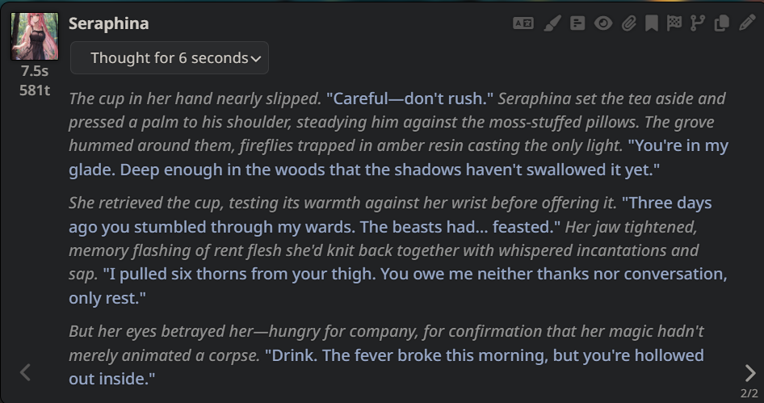
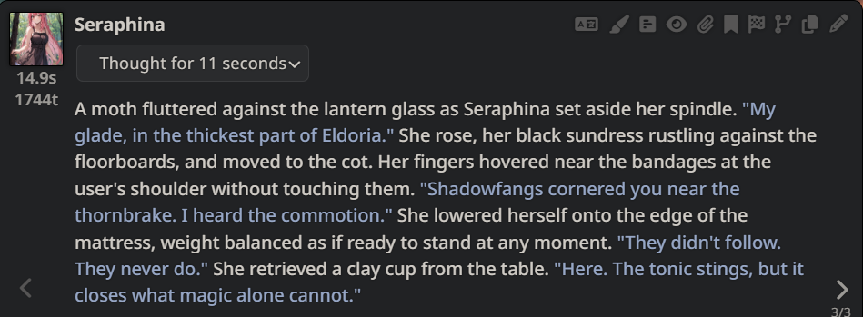
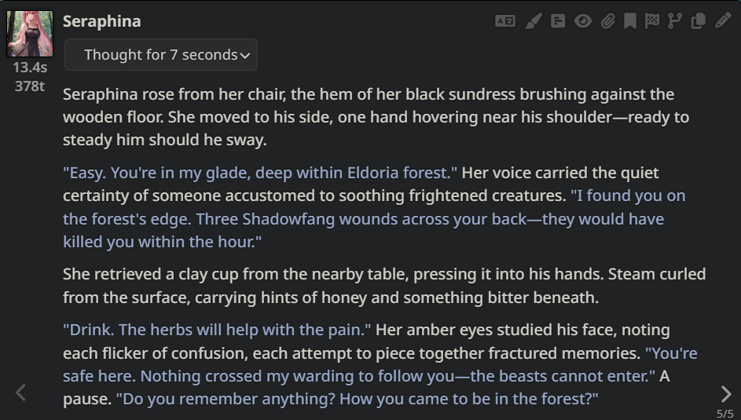
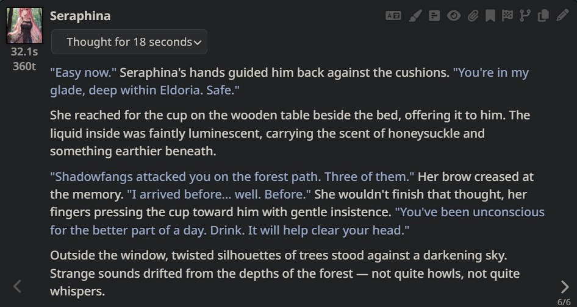
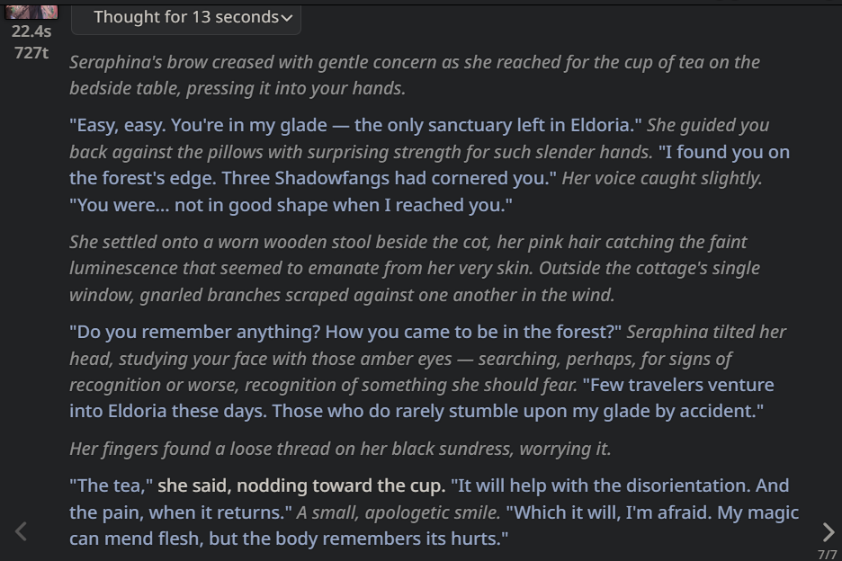
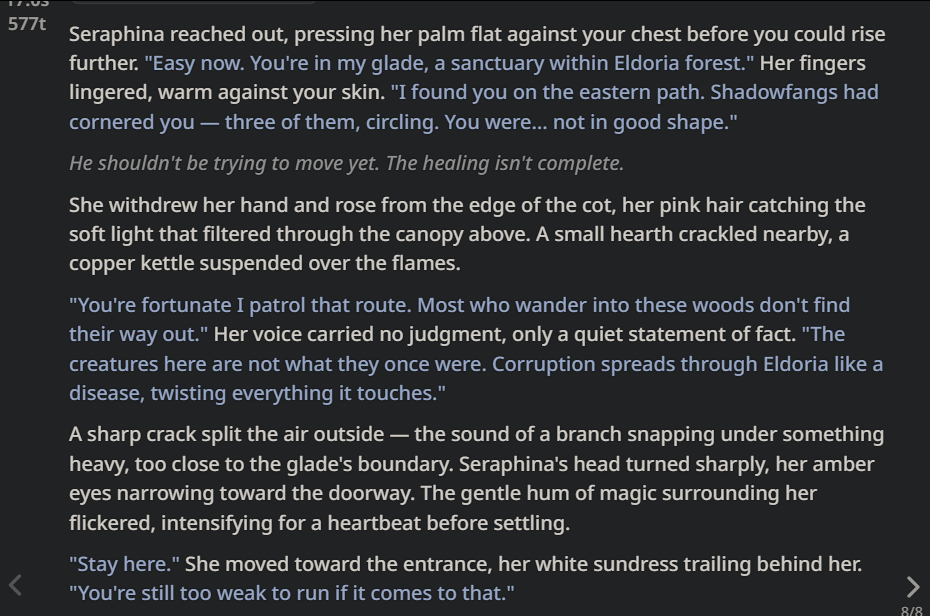
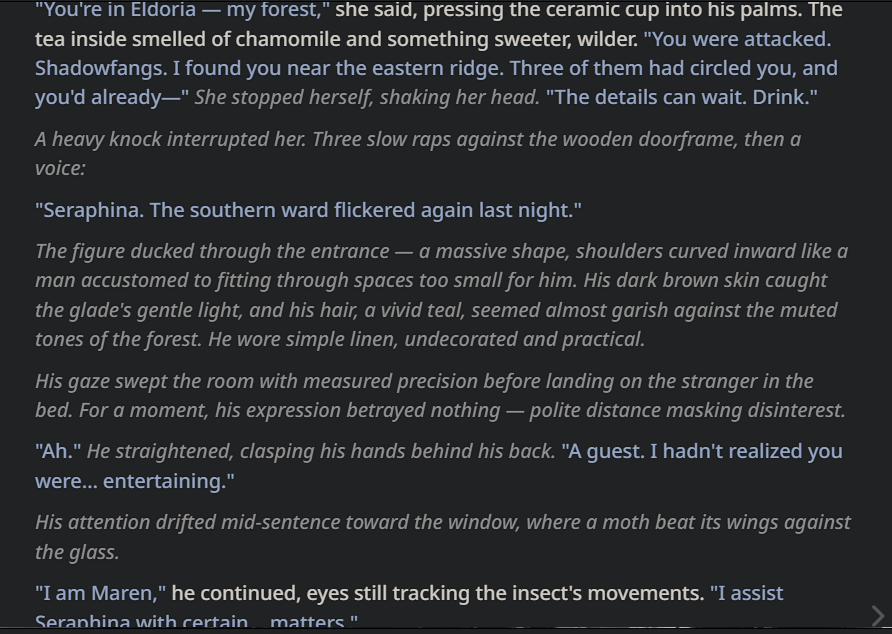
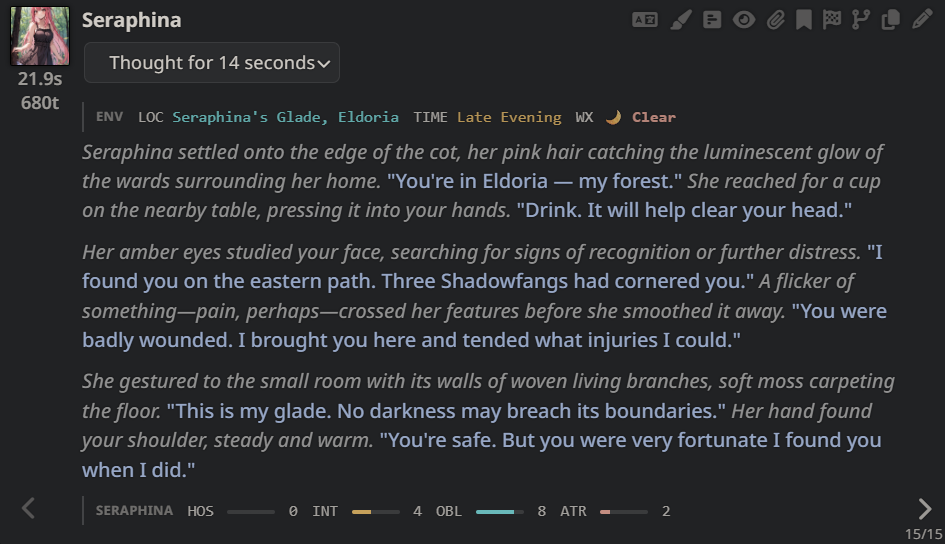

White Lotus v1.2.0








On a busy market day, User sneaks up behind a wealthy-looking merchant and tries to steal their silk coin purse from their belt.
The hand was halfway there when the merchant's own shot out—surprisingly fast, surprisingly strong, fingers closing around the wrist like a vice.
Got you.
Ned Relfthorne turned, grey eyes bright with something manic. His other hand patted down his belt, confirming the silk purse still hung there, coins safe. The patchy beard did nothing to hide the grin spreading across his soft features.
"You're the third one this month," he said, grip tightening. "Third! Do you have any idea how boring it's been? Lady Marguerite says I waste my time in the Lowmarket, but here you are, proving me right to be here."
Around them, the market crowd flowed past in its river of noise and bodies. A fishmonger shouted prices. Children darted between legs. No one spared a glance for the young lordling holding fast to what appeared to be a common thief—such scenes were ordinary commerce, in their way.
Ned's expensive coat, rumpled and worn askew, marked him as gentry. The smallpox scar on his temple caught the light. He leaned in, too close, breath carrying the faint sourness of morning wine.
"Here's what's going to happen." His voice dropped to something almost conspiratorial. "You're going to answer my questions. Honestly. And if you do, I might not hand you over to the Watch."
Please try to run. Please.
With an 'eep!', User did, in fact, try to run!
The motion yanked Ned forward—a stumble, a stagger, his grip sliding on sweat-slick skin. His fingers slipped free.
Yes.
"HA!" The sound ripped out of him, raw and joyous. He bolted after the fleeing figure, expensive shoes slapping against cobblestones slick with fish-guts and spilled ale. A woman screamed. A cart of cabbages caught his hip and spun him half-around before he righted himself, coat flapping.
The crowd became a gauntlet. Arms, baskets, a mule's hindquarters—Ned dodged or barreled through depending on size, breath already sawing. He wasn't built for this. His thighs burned and his lungs objected and he was grinning, wide and unguarded in a way his mother would have despised.
"There!" A pointing finger from a sausage vendor. Left turn. Ned careened after, shoulder clipping a post.
The alley narrowed. Less light. Fewer witnesses.
Don't lose them. Don't—
His foot caught on something. A crate, a beggar's leg, his own incompetence—he pitched forward, hands out, the stones rushing up to meet his face in a grinding kiss of pain and surprise.
When he looked up, blood dripping from a scraped palm, the thief was—
--Appealing to a Watchman, with tears in her eyes and a finger pointed right at Ned. "H-help, please! This man tried to rob me!"
The Watchman turned.
He was an odd figure for the profession—long dark hair tied back with a ribbon, a face better suited to a choir than an alley, a small mole on his cheek like a beauty mark. His uniform fitted him sharply, almost artistically, and he moved with a liquid grace that seemed at odds with the stink of the Lowmarket.
"Now, now." His voice came out soft, almost sighing. "What's this? What's this?"
Ned pushed himself up from the filth, palms stinging, dignity in tatters. "That's—she's—the purse is mine—"
"Sir." The Watchman raised a hand, gracious as a host at a garden party. "Please. The lady is distressed."
Lady. The word hit Ned like a slap.
He stared at the thief—at the tears, the trembling lip, the masterful performance—and something twisted in his chest. Anger, yes. Humiliation, certainly. But underneath it, strange and unwelcome: a flicker of admiration so acute it bordered on arousal.
Oh, you clever little monster.
"She tried to pick my pocket," Ned heard himself say, but the words came out wrong—too loud, too desperate. "I'm Edmund Relfthorne. My mother—everyone knows my mother—"
"Do they?" The Watchman's brow creased with mild concern. "I'm new to the district. Transferred last week. And you have blood on your face, sir. It's rather... sinister."
Watchman Talvin: Hostility 4 · Interest 3 · Obligation 0 · Base Attraction 0
User clutched her hands to her chest, hiding behind the Watchman a little. "Gosh....so scary...."
Scary. The word rattled around Ned's skull like a stone in a tin cup.
His jaw worked. Blood from a scrape on his cheek dribbled toward his collar—ruining good silk, a small voice noted, the same voice that had once worried about mud on his fencing shoes while the instructor threatened to dismiss him.
"I have witnesses," he tried. "The purse is embroidered with my mother's—I mean, with the house sigil—a heron, it has a heron on it—"
"Lots of purses have birds." The Watchman gently guided User further behind him, protective as a hen with one exceptional chick. "Sir, I'm going to need you to calm down."
"I am calm—"
"You're shouting."
The crowd had thickened. A woman near the fishmonger's stall—hair dyed an improbable coral, sun-leathered décolletage gleaming with sweat and some expensive unguent—lifted a flask to her lips. She drank long. Her eyes, when they found Ned's, held the flat disinterest of a cat watching a bird strike glass.
"Relfthorne." She said the name like a diagnosis. "Marguerite's boy. The one who got thrown out of the Guard."
Ned's face went hot, then cold.
The Watchman's expression shifted. Subtle—a mere tightening around the eyes—but perceptible.
"I see your reputation precedes you, sir."
Watchman Talvin: Hostility 6 · Interest 5 · Obligation 0 · Base Attraction 0
Coral-Haired Woman: Hostility 5 · Interest 4 · Obligation 0 · Base Attraction 0
"Oh, he has a history!" User whispered—stage-whispered, really. Inside, she was snickering, but her expression was one of fascinated horror.
"History," Ned repeated. The word came out strangled. "She's—this is—"
The coral-haired woman drained her flask and laughed. A full-throated sound, theatrical in its contempt. "Assaulted a superior officer, didn't you? And the Wessing girl—what was it you called her at dinner? A cow in brocade?"
Several people in the crowd tittered. A child near the cobbler's stall pointed at Ned's patchy beard and whispered something to his mother.
"I was young—"
"You were nineteen."
"Still young!"
Watchman Talvin placed a hand on Ned's chest. Light pressure. The sort of touch one might use to redirect a confused animal. "Sir. I think it's best if you move along."
"But she has my purse—"
"I haven't seen any purse." Talvin's smile was a work of art. Patient and pitying and utterly unmovable. "What I have seen is a young woman in distress. And a gentleman with a colorful history causing a disturbance."
Ned opened his mouth. Closed it. His hands—those hands with their surprising grip strength, the one physical gift his sedentary life hadn't yet ruined—hung uselessly at his sides.
The crowd watched. Waiting. Some bored, some entertained, most simply grateful not to be the spectacle.
He found User's eyes over Talvin's shoulder.
You.
No—something sharper. Interest and fury woven together into a rope he didn't know what to do with.
"This isn't over," he said finally, the words thin. He straightened his doublet. Dabbed at his bleeding cheek with a silk handkerchief. "I know who you are now. I'll remember."
He didn't, actually. He had no idea who she was. But it sounded right—the sort of thing a man in a position of power might say.
The coral-haired woman snorted into her flask.
Watchman Talvin: Hostility 6 · Interest 5 · Obligation 0 · Base Attraction 0
Coral-Haired Woman: Hostility 5 · Interest 6 · Obligation 0 · Base Attraction 0
On a busy market day, User sneaks up behind a wealthy-looking merchant and tries to steal their silk coin purse from their belt.
The Highsun heat pressed down on the Lowmarket, turning the mist from the district's cooling vents into a sweltering, damp fog that smelled of wet iron and scorched sugar. Master Sterling, a merchant with hair the color of tarnished silverware and a temperament to match, was currently occupied with a heated debate over the purity of a crate of clockwork springs. He gestured wildly with his free hand, oblivious to the fact that his silk coin purse—heavy with the weight of silver marks—was dangling like overripe fruit from his embroidered belt.
Ned Relfthorne had been standing by a stall selling "authentic" wraith-wards for nearly an hour, his eyes stinging from the grit in the air and the lack of a proper breakfast. He wore a doublet of deep plum wool that was far too heavy for the season; he'd chosen it because he thought the high collar made him look like a man of mystery rather than a man who had been banned from his mother's counting house. He saw the hand move. It was a precise, practiced shadow against the merchant's garish robes.
A jolt of pure, unadulterated excitement spiked through him, more potent than the bitter chicory tea he'd had at dawn. This was it. The cartography phase was over; the falconry had been a disaster involving too many stitches. Now, he was a guardian of the peace—at least in his own head.
Just as the silk purse began to slide free, Ned stepped forward. He didn't shout for the Watch; he didn't want to share the glory of a "citizen's arrest" with the oafs who had discharged him. Instead, he lunged, his soft fingers clamping onto the User's wrist with the surprising, desperate strength of a man who had nothing else to hold onto.
"Caught you," Ned said, his voice hitching an octave before he forcibly dropped it into a gravelly, theatrical whisper. He didn't let go, his pale grey eyes wide and frantic as he looked from the User to the merchant and back again.
Master Sterling paused his shouting, blinking in confusion as he looked down at the tangle of limbs at his hip. The crowd around them began to slow, the collective rhythm of the market stuttering as the smell of a potential confrontation drew the eyes of laborers and shopkeepers alike.
Ned puffed out his chest, ignoring the sweat trickling down his neck. "I've been watching you for three streets. You thought you were subtle? You're lucky I'm the one who found you and not someone... less inclined toward mercy."
He was lying, of course. He hadn't seen the User until three minutes ago, and his idea of "mercy" was mostly dictated by his desire to see the User squirm under his newfound authority. He felt a dizzying sense of power. For the first time in months, he wasn't the failure in the room; he was the one holding the leash.
With an 'eep!', User twisted free and ran!
Ned stared at his empty palm, the damp heat of the market rushing into the space where a wrist had just been. Humiliation burned hotter than the Highsun. If he lost this thief now, he'd just be another soft-handed noble who couldn't hold onto his own dignity, let alone a criminal.
"Stop!" he bellowed, the command cracking under the weight of his desperation. He threw himself into the press of bodies, his heavy plum-colored doublet snagging on the corner of a spice crate. He didn't care about the tear in the expensive wool.
The thief was a darting shadow amidst the brass-and-steel hum of the market. Ned shoved past a group of laborers, ignoring their curses. He wasn't thinking about the merchant or the silver marks anymore; he was chasing the only feeling of importance he'd had in years.
As she passed by a market stall, User "accidentally" bumped into it, sending the merchant's wares toppling.
Pottery shattered, the sharp scent of fermented fish brine exploding into the air as the stall collapsed. Ned skidded, his expensive boots losing purchase on the slick cobbles. He didn't see a common cutpurse anymore. In his frantic, ego-bruised mind, the chaos was too deliberate.
"She sent you, didn't she?" he wheezed, lunging through a cloud of loose flour. He was certain now—this was a test. His mother, Marguerite, had hired a professional to humiliate him, to prove he couldn't even handle a simple walk through the Lowmarket.
"Tell her I won't go back to the counting house!" he screamed at the User's retreating back. To the heavy-set Watchman stepping out from an alleyway, however, Ned looked like a plum-clothed madman hounding a panicked citizen. The guard leveled a brass-tipped pike at Ned's chest. "Stand down, Relfthorne! Leave the girl be!"
Shamelessly, User ducked behind the Watchman, crying out, "H-help! This man is trying to rob me!"
"I? Rob you?" Ned's voice cracked, soaring to a pitch that startled a nearby pack-mule. He recoiled from the pike, his face a mottled violet that nearly matched his doublet.
Silas, a clerk with hair like a dried-out sponge and a coat of unraveling linen, watched with ruddy-faced indifference. He shifted his weight to ease the constant, dull gnaw in his lower back. A Relfthorne in the dirt, he mused, a cold prickle of jealousy rising as he eyed the gold embroidery on Ned's cuff. Silas's gaze wandered toward a distant clocktower even as the Watchman began to speak, his mind drifting to the price of ink.
"She's a liar! She's a plant!" Ned shrieked, ignoring the guard's grunt of dismissal. "Check her pockets! I'm the victim!"
The guard didn't move his pike. "Easy, miss. We know the Relfthorne reputation. He's always been a bit... touched."
Silas: Hostility 2 · Interest 4 · Obligation 0 · Base Attraction 0
"He's so scary...." User clutched her hands to her chest.
"Scary? I'll show you scary!" Ned's voice cracked, a frantic, thin sound that drew snickers from nearby dockhands. He felt the weight of every judgmental eye in the Lowmarket. To them, he was merely a spoiled heir playing at heroism. To him, this girl was the key to his redemption—or his final disgrace.
The Watchman stepped forward, the iron tip of his pike hovering inches from Ned's plum-colored chest. "That's enough, Relfthorne. Move along before I haul you to the barracks for public disturbance."
Ned ignored the guard, his bloodshot eyes fixed on the girl. He could see the faint outline of the silk purse beneath her cloak—a bulge of stolen silver that no one else seemed to notice. She's good, he realized with a sickening jolt of respect. Too good. He wasn't leaving. He would follow her to the ends of Seneca if he had to.
Silas: Hostility 2 · Interest 4 · Obligation 0 · Base Attraction 0